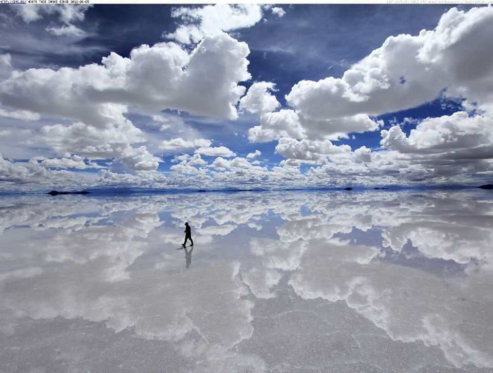
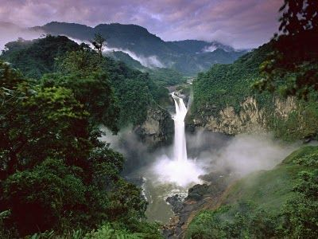
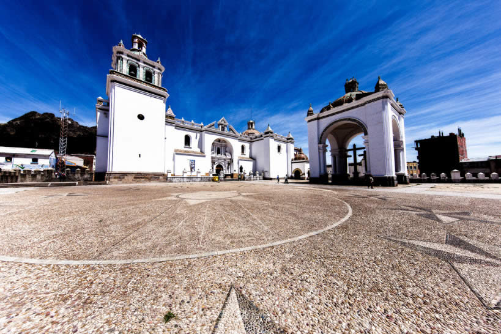

CULTURA EN BOLIVIA
Las mejores atracciones turísticas en Bolivia
Mucha gente piensa en Bolivia como un país principalmente andino o piensa primero en el Lago Titicaca o en el Salar de Uyuni. Lo que no saben es que la región andina cubre menos de un tercio de Bolivia. No te pierdas los otros dos tercios del país con hermosos destinos tropicales, como los bosques tropicales y cascadas, parques nacionales sorprendentes, la ciudad más grande de Bolivia, maravillosos sitios históricos , todos influenciados por algunos de los grupos étnicos menos conocidos en Bolivia, como los Moxos, Guarayos, Ayoreos, Guarani y Chiquitanos.
Bolivia es más seguro que los países vecinos y ofrece opciones económicas para viajar por diferentes áreas del país.
Bolivia ofrece mucho para los que buscan aventuras , así como para aquellos que se proponen explorar algo nuevo y casi nunca visto. Desde los altos picos de las montañas de los Andes, las salinas alucinantes en Uyuni, a las junglas calientes y sudorosas del Amazonas, Bolivia tiene un poco de todo.
1. Salar de Uyuni
El Salar de Uyuni (Salar de Uyuni), ubicado a unos 3800 metros sobre el nivel del mar en medio de los Andes en el suroeste de Bolivia, es el salar más grande del mundo . La sal se depositó aquí después de que un océano interior prehistórico se secara, dejando atrás un desierto de sal blanca cegadora de casi 11000 kilómetros cuadrados (aproximadamente 4086 millas cuadradas) de hasta 120 metros de profundidad. El Salar de Uyuni es la atracción turística más popular en Bolivia , una que debe verse para creerse.
Para llegar a Uyuni , usted puede volar (a través de La Paz), tomar un autobús , un tren desde Oruro, o una transporte privado de Sucre o Potosí.
La ciudad de Uyuni, ubicada a 3656 metros de altitud, es el punto de partida de todos los recorridos a las salinas de fama mundial. Uno de los lugares más planos del mundo, un viaje aquí se siente como un viaje a un extraño y hermoso planeta nuevo. De hecho, el Salar de Uyuni aparece en el Episodio 8 de la saga de Star Wars , así que no olvides llevar tu X-wing o TIE-Fighter para oportunidades de fotos súper divertidas con telones de fondo majestuosos!

2. Parque Nacional Madidi
Una de las visitas obligadas mientras viaja por Sudamérica es un viaje a la jungla amazónica para conocer de cerca y de forma personal una gran cantidad de vida salvaje. ¿Sabías que la cuenca del Amazonas se derrama en partes de Bolivia? De hecho, esta área del Amazonas es una región llena de bosques vírgenes y tranquilos. Gran parte de ella está relativamente inexplorada, por lo que es el lugar perfecto y tranquilo para que deambule.
Madidi es un parque nacional ubicado al noreste de La Paz, en la cuenca alta del río Amazonas en Bolivia. Establecido en 1995, tiene un área de 18958 kilómetros cuadrados y es uno de los parques biológicamente más diversos del mundo con 5000 a 6000 especies de flora.
El Parque Nacional Madidi comienza en los Andes y se extiende hasta el Amazonas a través de un área de 7000 millas cuadradas, es extremadamente popular entre los turistas . Puede ver un jaguar, monos titi (una especie de mono que no se encuentra en ningún otro lugar del mundo), especies de aves exóticas (alrededor del 11 por ciento de las 9,000 especies de pájaros del planeta se pueden encontrar en el Parque Nacional Madidi) o los gigantes nutrias que llaman a este bosque su hogar.

3. Lago Titicaca
Compartido entre Perú y Bolivia, el lago Titicaca es famoso por ser el lago navegable más alto del mundo. También es uno de los lagos más grandes del mundo con 3.232 millas cuadradas de agua y el segundo lago de agua dulce más grande de América del Sur. Con una altura promedio de 3810 metros sobre el nivel del mar, el lago Titicaca es una gran atracción turística para los amantes de la naturaleza y la historia. Como uno de los lugares más hermosos y monumentos más preciados de Bolivia, el lago Titicaca es un lugar ideal para grandes oportunidades fotográficas.
